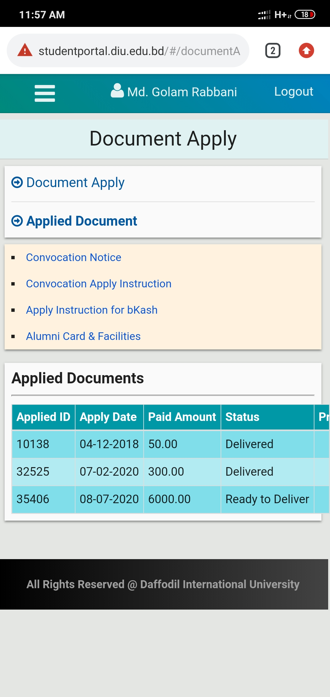
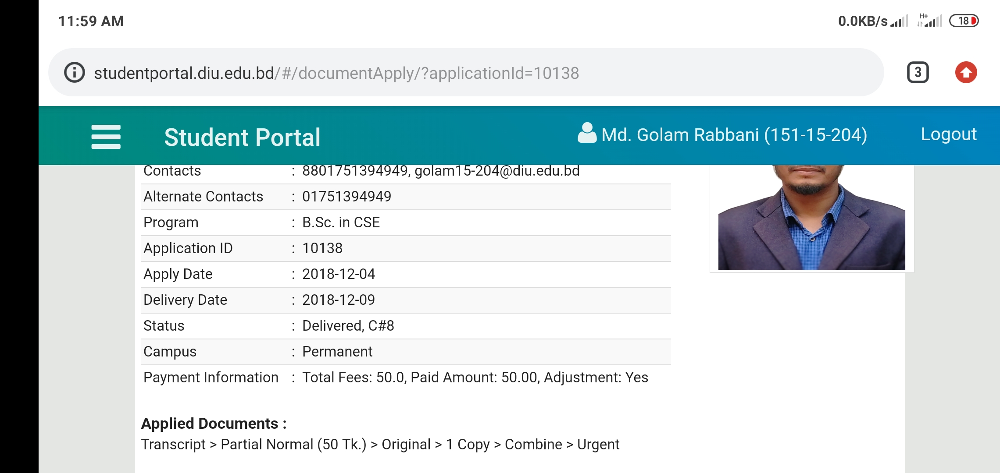

OC of Gobindojang, Gaibandha saying that it's mental problem. He don't ask me any sample. Munna, Teachers and OC all people said to go for a Physicologist. Isn't it a preplaned. Why they all said that.
I am seeking for a good explanation. Why a intentionally bad pescription was given by Doctor Rafiqul Islam.
They reached every where I have gone. By doing this they have tryed to mean that, They can go every where I go. And they can create a bad sisutation there. Here an example..


I have applied for my Certificate and marksheet togeather. before delivery date I have seen, two document is ready to delivery. Next day when I reached to collect, They saying that I have applied for only Transcript Not for Certificate. In student portal showing that I have collect a parsital transcript urgently at 2018. That is impossiable because there was 40000tk due that time.
Another issue related to above.
I was applying for higher study.I was needed a concern letter for confirmaiing that My graduation is complete.. It's already showing my student protal. After applying they asked for my bachelors, HSC, SSC transcript. At 2018 my SSC, HSC everything was stolen. and transcript was in my campus. It is not require that I have to submit transcript to collect That kinds of concern letter, It's just for harrasement. Luckly there was some old photocopys in my house.
Shabuddin still wanting that I will ask for his help.
When I was working at theri company he wanted to help me. I have written a General Diary at Banani thana, as Shabuddin, companys owner Salman and SI Mehedi( Banani thana ) said me to do. After GD the problem become more serious. Companys owner threaten me and said that he has taken more two guy( They speek like woman ). it is also a threat to me. Indrictlly he saying me to behave like them. After working 3 month they fired me. Still Shabuddin wanting to help me but his owner said already I have to act like those guy.
My friend making fun about the matter of my Certificate stolling